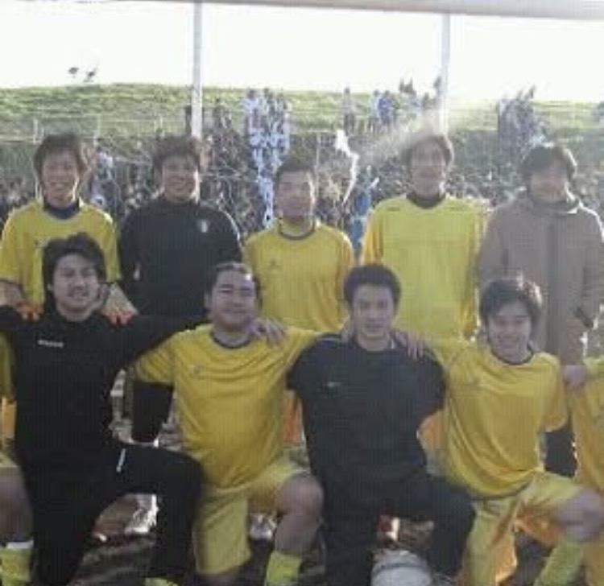
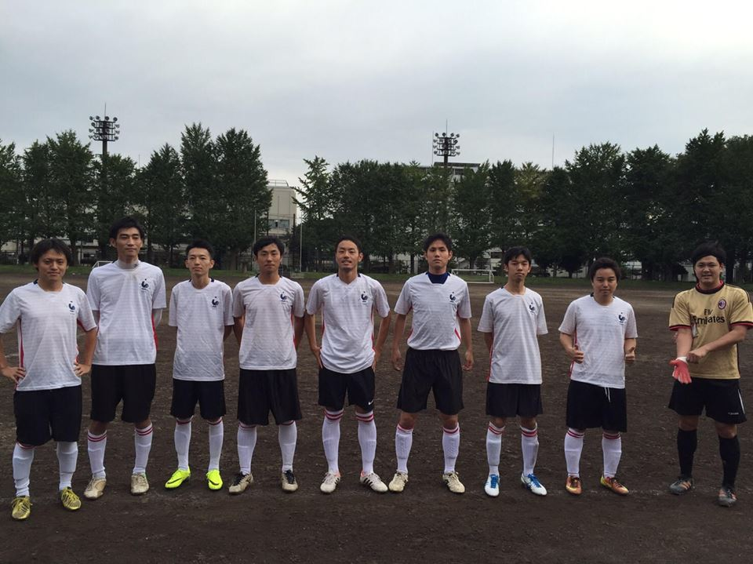
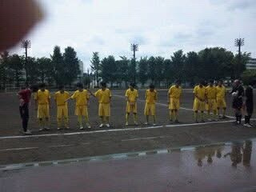

Team Information
1989年設立。北区で歴史を刻むサッカーチーム
| 正式名称 | FootballClub ZIEL フットボールクラブ ツィール |
|---|---|
| クラブ設立 | 1989年 |
| 所属リーグ | 東京都北区社会人サッカーリーグ 2部 |
| 所属部員 | 約20名 |
| 平均年齢 | 35歳 |
| 活動日 | 日曜日（月1回程度、リーグスケジュールによる） |
| 活動場所 | 赤羽スポーツの森公園 / 北運動公園（東京都北区） |
| 代表者 | 新山 |
| ユニフォーム |
1st（写真のユニフォーム）
金
2nd
白
|


